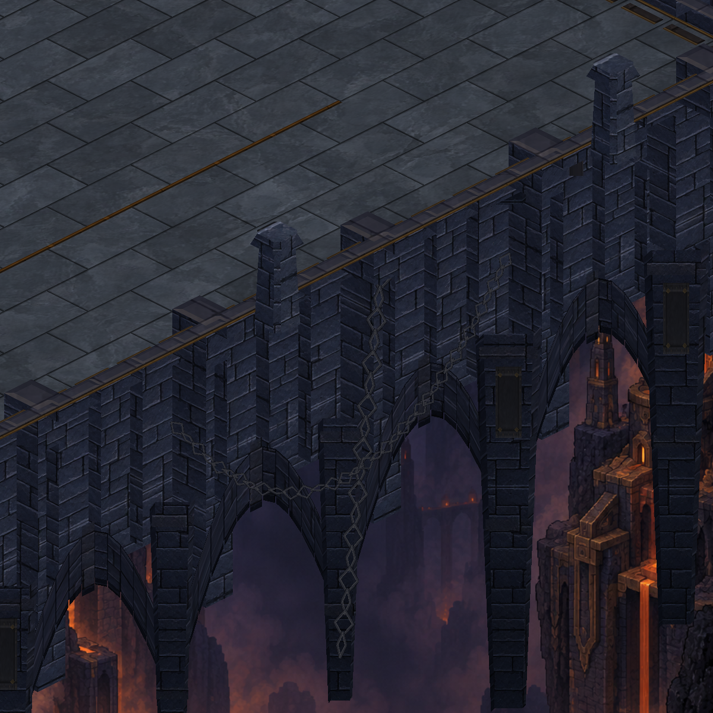
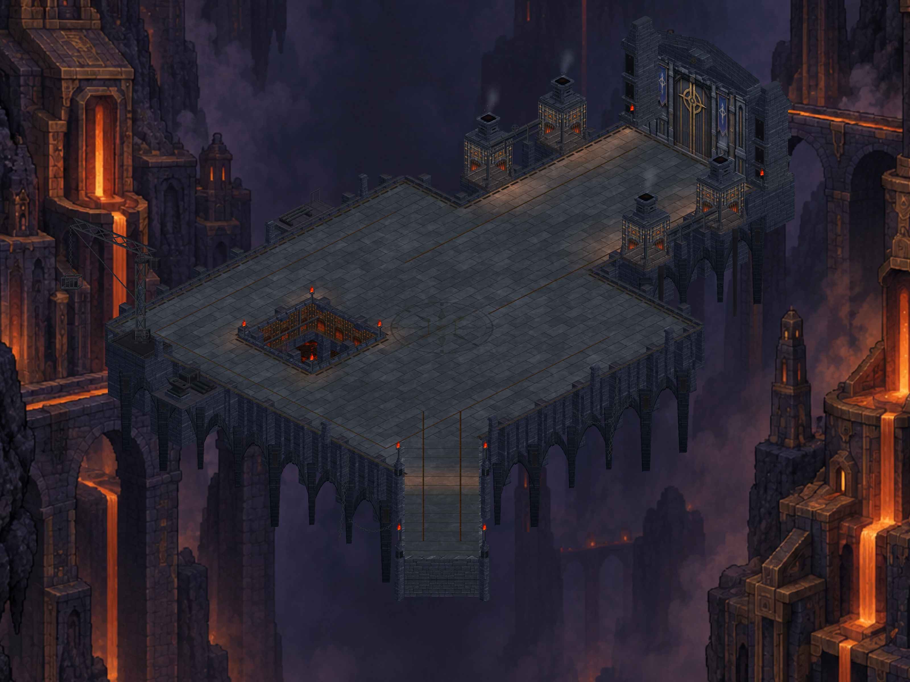

Kemer taş işçiliği
Platformun altındaki kemerlerde ayrı taş birleşimleri, merkez kilit taşı ve gölgeli iç yüzler. Görseller gerçek Unity sahnesinden alındı. Yakın planda görülen bir mimari düzenleme; haritanın genel silüeti aynı.

Sonra — taş birleşimleri ve kilit taşı
Haritanın tamamı

Üretim ve doğrulama kaydı